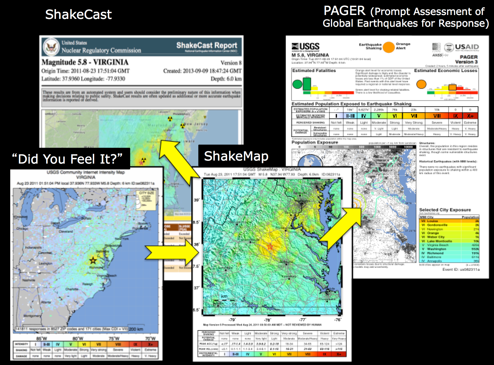
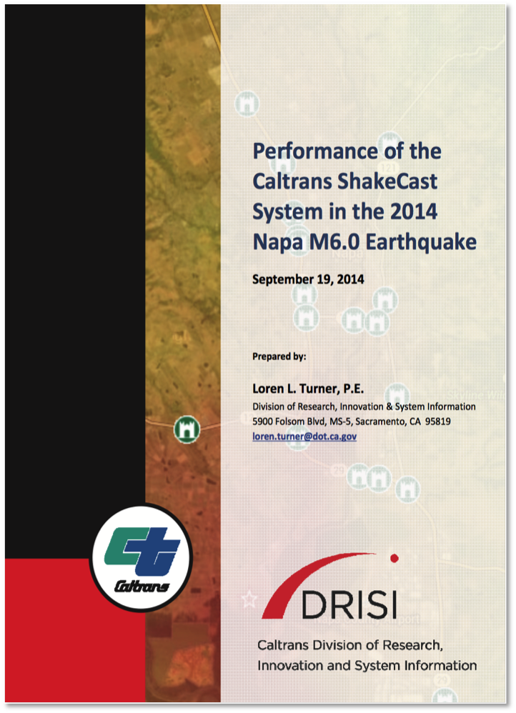
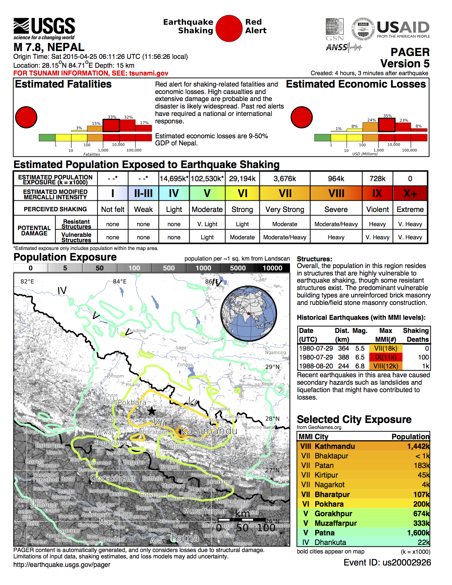

Related Systems¶
Here is a brief listing of USGS Earthquake Hazards Program rapid earthquake information products:
Earthquake Notification System sends automated, customizable notifications of earthquakes through email, pager, or cell phone.
Realtime Earthquake Map: Automatic maps and event information displayed online within minutes after earthquakes worldwidema
ShakeMap automatically generates maps displaying instrumentally measured shaking intensities.
Did You Feel It?: Map of earthquake effects derived from citizen input via online Web forms
PAGER (Prompt Assessment of Global Earthquakes for Response) rapidly compares the population exposed to various shaking intensities to estimate likely fatalities and economic losses
CISN Display: Stand-alone application that graphically alerts users, in near real time, of earthquakes and related hazards information.
ShakeCast: An application for automated delivery of ShakeMaps and potential damage or inspection priority for specific user-selected facilities.
ShakeAlert: Prototype Earthquake Early Warning (EEW) System.
While ShakeMap has met with success as a standalone product for communicating earthquake effects to the public and the emergency response and recovery community, it is increasingly being incorporated into value-added products that help in the assessment of earthquake impacts for response management and government officials.
{kind=link}

Fig. 2.29 Interplay between ShakeMap, DYFI, ShakeCast, and PAGER.¶
As discussed in detail the Technical Guide, ShakeMap is augmented by DYFI input for constraining intensities, and from those, estimates of peak ground motions (in some cases, and for some regions), as shown in Fig. 2.29. DYFI and ShakeMap in conjunction then represent the shaking hazard input for two other primary systems that estimated losses: ShakeCast and PAGER. ShakeCast is intended for specific users to prioritize response for specific user-centric portfolios of facilities; PAGER is for more general societal-impact assessments, providing estimated loss of life and economic impacts for the region affected.
ShakeCast¶
`ShakeCast`_ is a freely available post-earthquake situational awareness application that automatically retrieves earthquake shaking data from ShakeMap, compares intensity measures against users’ facilities, and generates potential damage assessment notifications, facility damage maps, and other web-based products for emergency managers and responders.
ShakeCast, short for ShakeMap Broadcast, is a fully automated system for delivering specific ShakeMap products to critical users and for triggering established post-earthquake response protocols. ShakeMap was developed and is used primarily for emergency response, loss estimation, and public information; for an informed response to a serious earthquake, critical users must go beyond just looking at ShakeMap, and understand the likely extent and severity of impact on the facilities for which they are responsible. To this end, the USGS has developed ShakeCast.

Fig. 2.30 Caltrans ShakeCast report for the 2011 M6.0 Napa, CA earthquake.¶
ShakeCast allows utilities, transportation agencies, businesses, and other large organizations to control and optimize the earthquake information they receive. With ShakeCast, they can automatically determine the shaking value at their facilities, set thresholds for notification of damage states for each facility, and then automatically notify (by pager, cell phone, or email) specified operators and inspectors within their organizations who are responsible for those particular facilities so they can set priorities for response.
PAGER¶
Another important USGS product that uses ShakeMap output as its primary data source is PAGER (Prompt Assessment of Global Earthquakes for Response), an automated system that produces content concerning the impact of significant earthquakes around the world, informing emergency responders, government and aid agencies, and the media of the potential scope of the disaster. PAGER rapidly assesses earthquake impacts by comparing the population exposed to each level of shaking intensity with models of economic and fatality losses based on past earthquakes in each country or region of the world. Earthquake alerts—which were formerly sent based only on event magnitude and location, or population exposure to shaking—will now be generated based also on the estimated range of fatalities and economic losses.
PAGER alerts are based on the “Earthquake Impact Scale” developed by Wald et al. (2011).

Fig. 2.31 Nepal OnePAGER Alert Example¶
Public and Private Sector Tools¶
Alternatives, modifications, and enhancements to the ShakeMap methodology are used widely around the world. Likewise, downstream derivative products and systems for loss estimation are widely employed, both in the public and private sector. What follows is a brief (and incomplete) description of some of these systems. Many proprietary hazard and loss modeling systems exist in the private sector, and typically they are openly described or referenced.
On the shaking hazard front, domestically, some public/private sector utilities run in-house shaking aggregation and estimation systems, including the East Bay Metropolitan Utility District (EBMUD’s Marconi system) and Pacific Gas and Electric (PG&E).
Impressive systems also exist in Japan, Taiwan, New Zealand, Turkey, among other countries.
JMA
GNS
INGV
On the rapid loss estimation front, several systems are in place in the U.S.
Internationally, Erdik et al. (2011) and Erdik et al. (2014) provide examples of operative rapid earthquake loss estimation systems.
Taiwan Earthquake Rapid Reporting System,
Realtime Earthquake Assessment Disaster System in Yokohama
Real Time Earthquake Disaster Mitigation System of the Tokyo Gas Co.
IGDAS Earthquake Protection System
Istanbul Earthquake Rapid Response System
ELER
SELENA
OpenQuake (OQ, GEM Foundation)
GDACS
QuakeLoss (WAPMERR)
PAGER (USGS)
Note
Links and pointers to non-USGS sites are provided for information only and do not constitute endorsement by the USGS (see USGS policy and disclaimers).
Lastly, many systems are available and in operation in the U.S. for aggregating hazard and impact information for emergency response and awareness. Many are multihazard oriented, and only those with focus on earthquake information are mentioned here. Some examples include:
InLet (ImageCat,Inc.)
HAZUS-MH,
ArcGIS online
As summarized by Gomberg and Jokobitz (2013): “others have built in-house systems to organize, share and display observations using commercial applications like Microsoft’s Streets and Trips and SharePoint, Google’s GoogleEarth, or ESRI’s ArcGIS. WebEOC, a real-time Web-enabled crisis information management system developed commercially by Esri, is meant to be an official link among public sector emergency managers in Washington State (see http://www.esi911.com/esi). While used by many agencies, it always was just one of multiple communication tools. A commonly expressed desire was for a centralized hub for all types of disaster information (like the Department of Homeland Security’s Virtual USA).”
{kind=link}
Further information on private sector tools can be found in the Department of Homeland Security (DHS) summary for the Capstone 2014 National Level (scenario) Exercise.